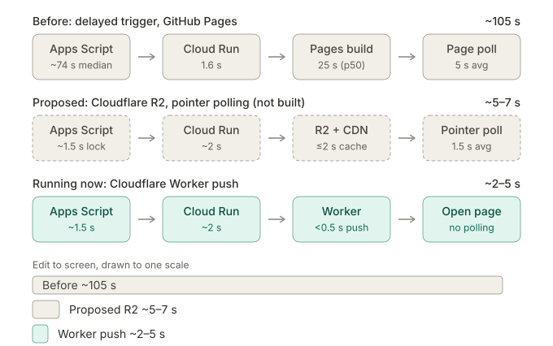

Live push delivery — plain-language explainer¶
Status: implemented, and in use since the two events of 3 October 2026. The wording below was written before the build, so it still speaks of a plan; the implementation spec has the as-built details.
Companion to durable-object-push-spec.md (the implementation spec). This
file is for understanding what the project does and why; it has no
instructions an implementer should follow — read the spec for that.
This is one of two alternative plans for the same problem. The other is Fast data delivery (Cloudflare R2 with pages checking every 3 seconds). Only one gets built.
The problem¶
When a scorekeeper types a score into a facility's Google Sheet, players and wall screens see it about 35 seconds later, and a minute or more in bad moments. Measured at Pickle for Sight (27 September 2026) and on the Piggleball workbook (1 October 2026):
| Step | Typical | Bad case |
|---|---|---|
| Google Apps Script notices the edit and starts the sync | ~1.5s (was ~74s before Immediate sync) | ~5s |
| Our server (Cloud Run) reads the sheet and saves the result | 1.6s | ~2s |
| GitHub Pages rebuilds the site with the new file | 25s | 52–82s |
| The page checks for new data (every 10s) | 5s | 10s |
The GitHub rebuild is the biggest step we've measured, and it gets worse when the sheets are busiest: every new save cancels the rebuild already in progress.
What this plan does¶
Steps 1 and 2 are their own spec, Immediate sync, and are already built: they speed up and repair today's system on their own, and the R2 plan needs them too. Steps 3–5 are this plan.
1. Measure first, and fix a lost-update bug. Every sync starts recording when the edit happened, so Control Center can show how long each edit took to reach the server, and we finally know how slow the first step really is.
The same step fixes a problem that exists today. All of a day's venues save into one shared file. When two venues save within about a second of each other, the second save is rejected, and that venue's new score doesn't appear until someone edits its sheet again. All four failed saves at Pickle for Sight were this; with three venues it would happen a handful of times a day. After the fix, the rejected save re-reads the file, merges again and retries, and the sheet itself tries once more if a save still fails.
2. Start the sync right away. Today, an edit asks Google to run the sync "in about three seconds", and Google treats that as a suggestion. The new version syncs from the edit itself: it waits a second and a half (so both scores of a match usually go in together), sends the update, and if more edits arrived meanwhile, sends one more. Only one sync runs at a time per sheet, so a burst of typing doesn't turn into a burst of syncs.
3. A small always-on relay at Cloudflare. Cloudflare's free plan offers "Durable Objects": tiny programs that each hold one piece of data and can keep live connections open to many browsers. We'd run one per tournament day. Our server hands it each new snapshot, and it immediately passes the snapshot to every page that's open.
4. Pages listen instead of asking. Each page opens one live connection (a WebSocket) when it loads. New scores arrive the moment they're published — no checking every 10 seconds, no waiting for GitHub. If the connection drops (a phone goes to sleep, venue wifi hiccups, Cloudflare restarts), the page quietly goes back to checking GitHub the old way and reconnects in the background.
5. GitHub stays as the backup. Every snapshot is still saved to GitHub after it has been pushed out. That keeps a permanent record, lets pages fall back to it, and keeps the Scoresheet Generator and archived event pages working unchanged.
How fast¶
About 2–5 seconds from pressing Enter to the score appearing on a phone or wall screen, and around 8–10 seconds in a bad moment (the server waking from idle plus a slow Google step). Each part of the plan helps on its own, but the full speed needs both the quicker sheet trigger and the live push.
The three pipelines side by side¶

How to read it: each row is one score's journey from the sheet edit to a screen. Before is measured (Pickle for Sight and Piggleball). Proposed is the Fast data delivery plan's estimates; it was never built. Running now is the Worker push: the Cloud Run leg and the edit-to-published time are measured, and the push leg is expected to be well under a second, to be confirmed by the real-use checks. In the two newer rows Cloud Run also saves the snapshot to GitHub afterwards as the archive, which is off the viewers' path, and a page whose live connection is down falls back to polling GitHub at the old speed. The old row's biggest delays were the delayed Apps Script trigger and the GitHub Pages build; the two newer plans both remove them.
What it costs¶
Nothing, at our audience sizes. Cloudflare's free plan allows 100,000 requests a day. A page left open all day uses about 45 (mostly small "are you still there?" pings every 50 seconds), so a full day with 500 viewers uses about a quarter of the allowance. It would take around 2,000 people watching all day to reach it — and if that ever happened, pages wouldn't break, they'd just fall back to today's slower updates. There's no bill to be surprised by. No domain name has to be bought.
What could go wrong, and what happens then¶
- The live connection is down for one viewer (phone asleep, strict venue wifi): that viewer gets today's speed until it reconnects.
- The relay is down entirely: every page falls back to GitHub, and the server keeps saving there. Today's speed, not an outage.
- The server can't reach the relay: it saves to GitHub as it does today, and pages pick that up within a minute through a periodic safety check.
- Two facilities save at the same moment: the relay accepts one, tells the other "someone else just saved", and that one re-merges and tries again, so neither facility's scores are lost.
- Force hidden / Live controls in Control Center go through the same relay, so hiding a mistaken score reaches the public page within seconds.
- Updating the relay's code disconnects everyone briefly (they reconnect on their own), so it's never updated during an event.
What it adds to look after¶
One small Cloudflare Worker (a single JavaScript file, deployed by hand with Cloudflare's command-line tool) and one extra shared secret between it and our server. Durable Objects only exist on Cloudflare, so moving elsewhere later would mean rewriting that one piece — the GitHub fallback keeps the site working in the meantime.
Compared with the R2 plan¶
| Live push (this plan) | R2 + polling | |
|---|---|---|
| Typical edit → screen | ~2–5s | ~5–7s |
| Cost | Free | Free, plus a ~$10/year domain |
| Pages connection | One live connection each | A tiny check every 3 seconds |
| Hardest part to get right | Reconnecting cleanly | CDN caching rule (mistakes show up only on the bill) and concurrent-write checks |
| Tied to one provider | Yes (Cloudflare) | Less (standard S3 storage) |
Both plans need the same first two steps: measuring, and the faster sheet trigger.
Structure of the spec¶
- §0 orients an implementer who knows nothing about the project.
- §1–§3 give the numbers, the target design and four phases, each useful on its own.
- §4 lists what the Immediate sync spec must already have built.
- §5–§8 are the phases: the Cloudflare relay, the server changes, the page changes and the documentation.
- §9 is limits and cost, §10 the things to confirm while building, §11 the acceptance checklist, §12 rollout and rollback, §13 what's left out.